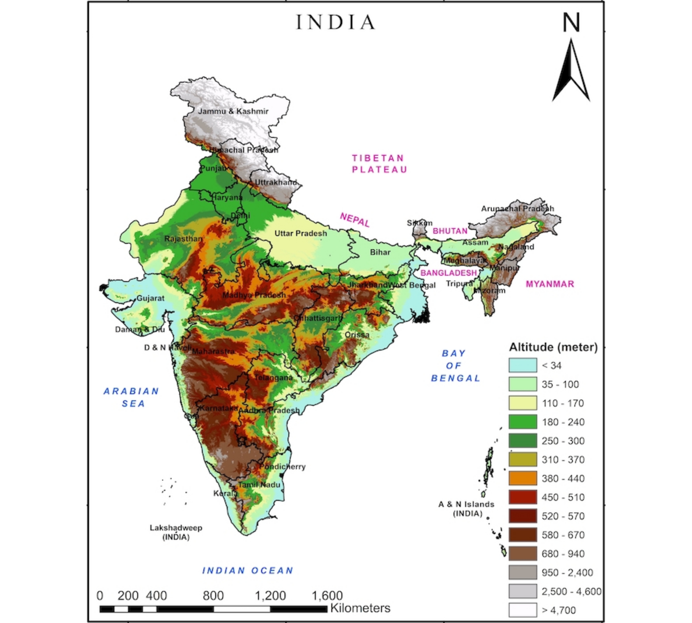

Centre for Atmospheric Sciences, Indian Institute of Technology Delhi
Delhi, India
Title: Changing Climate of the Himalaya-Tibetan Highland and its Association with the Climate of India
University of Pune & Indian Institute of Tropical Meteorology
Pune, India
University of Pune
Pune, India
University of Pune
Pune, India
King Abdullah University of Science and Technology
Thuwal, Saudi Arabia
Advisor: Prof. Ibrahim Hoteit
Title: Assessment of NEX-GDDP multi-model mean for the historical climate of Arabian Peninsula
Centre for Atmospheric Sciences, Indian Institute of Technology Delhi
Delhi, India
Advisor: Dr. Sagnik Dey
Title: Impact of Air Quality and Heat Stress on Health: Future Projections for India
Centre for Atmospheric Sciences, Indian Institute of Technology Delhi
Delhi, India
Advisor: Prof. S. K. Dash
Title: Asian Cites Adapt-Impacts of Climate Change in Target Cites in India and the Philippines and local adaptation strategies
Department of Space and Atmospheric Sciences, University of Pune
Pune, India
Advisor: Dr. A. K. Karipot
Title: Calibration and Validation of Land Surface Model by using INSAT-3D Observations and in situ Measurements
Indian Institute of Tropical Meteorology
Pune, India
Advisor: Dr. M. N. Patil (Scientist E)
Title: Variability of Fluxes in Atmospheric Boundary Layer by Using Micrometeorological Tower
Operating systems: Linux, Mac and Windows
Software’s: NCAR-NCL, MATLAB, Origin, CDO, NCO, Shell Scripting
Languages known: Fortran90
Model Used: NCAR CESM-CAM, RegCM4
Tiwari K., S. K. Mishra, P. Salunke, H. Ozawa, and A. Dewan: Potential Effects of the Projected Antarctic Sea-Ice Loss on the Climate System. Climate Dynamics, Accepted, 2022.
Tiwari K., S. K. Mishra, P. Salunke, and A. Dewan: Future Projections of Temperature and Precipitation for Antarctica. Environmental Research Letters, 17, 014029, 2022.
Zebaze S., R. Pathak, A. J. K. Mbienda, W. M. Pokam, P. Salunke, A. Anand, D. A. Vondou, A. Lenouo, and S. K. Mishra: An Investigation into the Role of Synoptic Conditions on Central African Precipitation Variability. Acta Geophysica, 70, pages 943–962, 2022.
Mishra S. K., S. Jain, A. Anand, P. Salunke, and J. T. Fasullo: Historical and Projected Low-Frequency Variability in the Somali Jet and Indian Summer Monsoon. Climate Dynamics, 56, 749-765, 2021.
Bal P. K., H. R. Dasari, N. Prasad, P. Salunke, and R. S. Parihar: Variations of Energy Fluxes with ENSO, IOD and ISV of Indian Summer Monsoon Rainfall over the Indian Monsoon Region. Atmospheric Research, Volume 258, 2021. DOI:10.1016/j.atmosres.2021.105645
Bhowmick, M., S. K. Mishra, B. Kravitz, S. Sahany, and P. Salunke: Response of the Indian summer monsoon to global warming, solar geoengineering and its termination. Scientific Reports, 11, 9791, 2021. DOI:10.1038/s41598-021-89249-6
Bal, P. K., H. P. Dasari, N. Prasad, P. Salunke, and R. S. Parihar: Variations of Energy Fluxes with ENSO, IOD and ISV of Indian Summer Monsoon Rainfall over the Indian Monsoon Region. Atmospheric Research, 2021. DOI:10.1016/j.atmosres.2021.105645
Jain, S., S. K. Mishra, A. Anand, P. Salunke and J. T. Fasullo: Historical and Projected Low-Frequency Variability in the Somali Jet and Indian Summer Monsoon. Climatie Dynamics 2021. DOI:10.1007/s00382-020-05492-z
Salunke P., S. Jain, and S. K. Mishra: Performance of the CMIP5 models in the simulation of the Himalaya-Tibetan Plateau monsoon, Theoretical and Applied Climatology, 137, 909-928, 2019. DOI:10.1007/s00704-018-2644-9
Jain S., P. Salunke, S. K. Mishra, and S. Sahany: Advantage of NEX-GDDP over CMIP5 and CORDEX Data: Indian Summer Monsoon, Atmospheric Research, Volume 228,152-160, 2019. DOI:10.1016/j.atmosres.2019.05.026
Mishra S. K., S. Jain, P. Salunke, and S. Sahany: Past and Future Climate Change over the Himalaya-Tibetan Highland-Inferences from APHRODITE and NEX-GDDP DATA, Climatic Change, 156,315-322, 2019. DOI:10.1007/s10584-019-02473-y
Zebaze S., S. Jain, P. Salunke, S. Shafiq and S. K. Mishra: Assessment of CMIP5 multimodel mean for the historical climate of Africa, Atmospheric Science Letters, 20,1-12, 2019. DOI:10.1002/asl.926
Parihar Singh R., P. K. Bal, V. Kumar, S. K. Mishra, S. Sahany, P. Salunke, S. K. Dash and R. Dhiman: Numerical Modeling of the Dynamics of Malaria Transmission in a Highly Endemic Region of India, Scientific Reports 9(1): 11903. 2019. DOI:10.1038/s41598-019-47212-6
Mishra, S. K., S. Sahany, P. Salunke, In-Sik Kang, and S. Jain: Fidelity of CMIP5 Multi Model Mean in Assessing Indian Monsoon Simulations, npj Climate and Atmospheric Sciences, 1, Article number 39, 2018. DOI:10.1038/s41612-018-0049-1
Jain S., P. Salunke, S. K. Mishra, and S. Sahany: Performance of CMIP5 models in the simulation of Indian summer monsoon, Theoretical and Applied Climatology, 137,1429-1447, 2019. DOI:10.1007/s00704-018-2674-3
Jain S., S. K. Mishra, P. Salunke, and S. Sahany: Importance of the Resolution of Surface Topography Vis-à-Vis Atmospheric and Surface Processes in the Simulation of the Climate of Himalaya-Tibet Highland, Climate Dynamics, 52,4735-4748, 2019. DOI:10.1007/s00382-018-4411-0
Sahany S., S. K. Mishra, and P. Salunke: Historical Simulations and Climate Change Projections over India by NCAR CCSM4: CMIP5 vs. NEX-GDDP, Theoretical and Applied Climatology, 135,1423-1433, 2019. DOI:10.1007/s00704-018-2455-z
Mishra S. K., S. Sahany, and P. Salunke: CMIP5 vs. CORDEX over the Indian region: how much do we benefit from dynamical downscaling? Theoretical and Applied Climatology, Volume 133, Issue 3-4, pp 1133-1141, 2017. DOI:10.1007/s00704-017-2237-z
Mishra S. K., S. Sahany, and P. Salunke: Linkages between MJO and summer monsoon rainfall over India and surrounding region, Meteorology and Atmospheric Physics, Volume 129, pp 283-296, 2017. DOI:10.1007/s00703-016-0470-0
Dash S. K., S. Dey, P. Salunke, M. Dalal, V. Saraswat, S. Chowdhury, R. K. Choudhary: Comparative Study of Heat Indices in India Based on Observed and model Simulated Data, Curr World Environ,12(3),2017. DOI:10.12944/CWE.12.3.06
Salunke P., and S. K. Mishra, 2022: Evaluation of Indian Summer Monsoon Precipitation using CMIP5 and CMIP6 models, EGU General Assembly 2022, Vienna, Austria, 23-27 May, (Virtual).
Bhuyan D. P., Salunke P., and S. K. Mishra,2022: Assessment of Extreme Precipitation Indices over India CMIP6 Models, EGU General Assembly 2022, Vienna, Austria, 23-27 May, (Virtual).
Upadhyaya P., S. K. Mishra, S. Jain, and Salunke P.,, 2022: Seasonal Prediction of Indian Summer Monsoon: Influence of Well- resolved Stratosphere, EGU General Assembly 2022, Vienna, Austria, 23-27 May, (Virtual).
Salunke P., S. K. Mishra,, and A. Anand, 2020: Impact of the Himalayan-Tibetan Highland Orography on Somali Jet and Tropical Easterly Jet and the Indian Summer Monsoon, Virtual Poster presentation at American Geophysical Union (AGU) Fall Meeting 2020.
Salunke P., and S. K. Mishra, “Past and Future of Tropical Easterly Jet and it’s association with Indian Summer Monsoon”; Poster presentation at European Geophysical Union (EGU) General Assembly 2019, Austria International Centre, Vienna, Austria, 2019.
Salunke P., S. Jain, S. K. Mishra and Sahany S., “Evaluation of CMIP5 Models for Indian Summer-Monsoon Precipitation and Temperature”; Oral presentation at TROPMET 2018, Banaras Hindu University, Varanasi, Utter Pradesh, India, 2018.
Jain S., Mishra S. K. , Salunke P., and Sahany S., “Importance of the Resolution of Surface Topography Vis-à-Vis Atmospheric and Surface Processes in the Simulation of the Climate of Himalaya-Tibet Plateau”; Oral presentation at TROPMET 2018, Banaras Hindu University, Varanasi, Utter Pradesh, India, 2018.
Singh R., Salunke P., Bal P. K, H. Dwivedi, Mishra S. K., Sahany S., Naik S. N., “Analysis of Potential Effects of Climate Change on Malaria Transmission Dynamics in Odisha, India”; Poster presentation at TROPMET 2018, Banaras Hindu University, Varanasi, Utter Pradesh, India, 2018.
Singh R., Salunke P., Mishra S. K., Naik S. N., “Response of Climatic Conditions and Human Health over India to Geo engineering (G3)”; Poster presentation at Eighth Annual Geo MIP Meeting, at ETH Zurich, Switzerland, 2018.
Bhowmick M., Mishra S. K., Salunke P., Chakraborty M., “Indian Monsoon in the Geoengineered world (G2) and after its Termination”; Oral presentation at Eighth Annual Geo MIP Meeting, at ETH Zurich, Switzerland, 2018.
Mishra S. K., Sahany S., Salunke P., “SRM Research in India: Future Prospects”; Oral presentation at SRMGI Global Forum at Berlin Germany, 2017.
Mishra S. K., Sahany S., Salunke P., “SRM Research in India”; Oral presentation at SRMGI Global Forum at Berlin Germany, 2017.
Mishra S. K., Sahany S., Dash S. K., Anand A., Pathak R., and Salunke P., “Need for Reliable Simulations of Indian Climate: Climate Projections to Climate Engineering”; Oral presentation at ICTP, Italy, 2017.
Pathak R., Sahany S., Mishra S. K., Gupta K., Salunke P., Anand A., “CMIP5 vs CORDEX in the Context of Indian Monsoon”; Poster presentation at 13th Annual Meeting of the Asia Oceania Geosciences Society, Beijing, China, 2016.
Mishra S. K., Salunke P., Sahany S., and Dash S. K., “Climate Change and Climate Variability in India: Reliability of Present-day Models”; Oral presentation at International Conference on Climate change and Adaptation: Empowering small holders and ensuring food security, Chennai, India, 2016.

INDIAN LAND